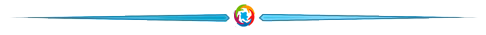

<!-- Menu navegación -->
<app-header></app-header>

<div *ngIf="this.contador !=0" class="">
  <!--Componente Parallax -->
  <app-parallax></app-parallax>
</div>


<div class="col-12 mt-5 mb-5 text-center">
  <h1 class="mb-0 titulo-seguimiento">¿Qué Necesitás Hacer?</h1>
  
</div>

<app-tramites></app-tramites>

<!-- Menu tramite Por hacer-->
<!-- <div class="col-12 mt-4 mb-3 text">
  <div class="d-flex justify-content-center">
    <button class="btn btn-outline-primary" [routerLink]="[ '/home/tramites' ]">SEGUIMIENTO Á TRÁMITES</button>
    <button class="ms-1 btn btn-outline-primary" [routerLink]="[ '/home/guiatramites' ]">REQUISITOS DE TRÁMITES</button>
  </div>
</div> -->


<!-- Renderiza todas las paginas de HOME MODULE -->
<router-outlet></router-outlet>

<app-footer></app-footer>
